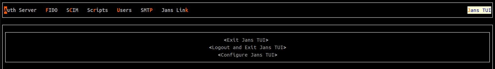

TUI Navigation Guide#
General Structure:#
- The TUI consists of many tabs, each tab may or may not contain nested tabs.
- The TUI consists of one main navigation bar which contains (Auth Server, FIDO, SCIM, Scripts, Users, and Jans CLI)

- The tab currently in focus is highlighted at the top. ex:

Note:
- in the image provided below
SCIMis focused - We can notice that there is a cursor mark on the first of the Navigation bar line, which indicates that the focus currently in this widget

General Purpose shortcuts#
f1:
Open help dialog (currently, help dialog is static, in the near future it will dynamically change according to the current position inside the TUI )

ESC:
Close any dialog or even nested dialog

Ctrl+c(Terminate) :
Terminate the program (SIGINT)
Note
Configuration changes made through the CLI or Config-API may not immediately reflect in the current view of the TUI. To refresh the interface and see the latest updates, you can either switch to a different TUI tab and return, or restart the TUI application. TUI fetches configuration data from the backend server at the start of the TUI session. So, a restart of TUI will load fresh data.
Navigation Shortcuts#
General Navigation shortcuts#
tab(Next):
focus on the next field or widget.

shift + tab(Previous):
focus on the previous field or widget

PageUp(Next tab):
Jump to the next tab in dialogs (ex: Client dialog)
Note:
* the focus must be inside the current tab
In the Gif provided, the focus was inside the tab itself before we can press the PageUp key
If the focus is on the tab name itself, we can navigate to other tabs by the Up key and Down key

PageDown(Previous tab) :
Jump to the previous tab in dialogs (ex: Client dialog)
Note:- the focus must be inside the current tab
- In the Gif provided, the focus was inside the tab itself before we can press the
PageDownkey - If the focus is on the tab name itself, we can navigate to other tabs by the
Upkey andDownkey

Main tabs Navigation shortcuts#
Alt + key
You can navigate to any tab inside the TUI by using theAltkey followed by a certain letter from the tab you want to navigate too
Note:
* the colored character inside each Tab name is the specified letter for the navigation.
* you can't navigate from a tab in the main top navigation bar to a nested navigation bar inside another tab, you must navigate to it first.
examples on the navigation letters for the main navigation bar:
Auth Server->AFIDO->FSCIM->CScripts->rUsers->UJans CLI->J

Custom widget shortcuts#
Note: * This section contains any widgets with special shortcuts and behavior
Lists (Vertical Nav bar)#
currently, we have about 6 List widgets
Note:
* Any list widget can be navigated between its items by the Up key and Down key
* There are some shortcuts here that can be used in most but not all List widgets
-
delete:
can be used to delete a certain item -
d:
can be used to view all the selected item data in theJSONformat -
Enter:
can be used to edit the current item
ex:

p: can be used to update user's password.

Date Widgets#
The date widget can be used to select a date and time. ex (Client Expiration Date)

tab,shift + tab:
can be used to navigate between date and time

Up,Down,Right, andLeftarrows:
can be used to change the date and time
Note:
* in the date section, if you navigate to the right border and then pressed Right, the year will be increased.
in the date section, if you navigate to the left border and then pressed Left, the year will be decreased.
in the date section, if you navigate to the up border and then pressed Up, the month will be decreased.
* in the date section, if you navigate to the down border and then pressed Down, the month will be increased.

- in the
timesection, you can navigate between hour, minute, and second by theRightkey and theLeftkey. - in the
timesection, you can increase the time (hour, minute, or second) by theUpkey and theDownkey.

Label Widgets#
The label widget is used with scopes to show certain items instead of a long one, it is similar to the list widget
-
tab,shift + tab:
can be used to navigate between the button and the labels -
Rightkey andLeftkey
can be used to navigate between the labels -
d:
can be used to view all the data of the selected label -
delete:
can be used to delete a certain label

Logout and Exit#
Exit will close the TUI screen while logout will force re-authentication of TUI using device-code.
Navigate to Jans TUI on upper right corner of the screen and hit enter.
